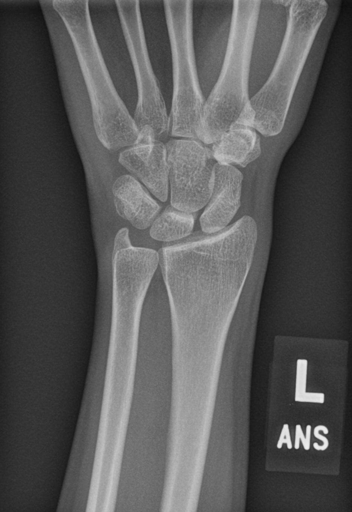

I'm a predoctoral researcher with Lexi Decker at WashU. Broadly, I'm interested in concept representations, abstraction and compositionality, and how they inform higher-order cognition in minds and machines. Even more generally, I'm interested in formal mental models, mental programs, and the physics of intelligence.
Prior/ongoing work spans LoT, hierarchical reasoning, compositionality, program induction, representation geometry, RSA, memory & attention, comparative cognition, etc.